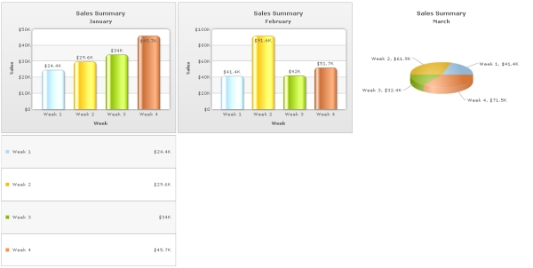

| Embedding multiple charts in a page |
|
You can easily embed any number of charts in a single HTML page (or Web page). You can even combine charts from FusionCharts XT and PowerCharts XT, maps from FusionMaps XT, and gauges from FusionWidgets XT in the same page. In this example, we will add three charts and a grid component to a page. Three charts showing weekly sales for months -January (Column2D), February (Column2D) March (Pie3D), and an additional Grid component showing weekly sales for January. The page will look like the image below:  Code examples and data files discussed in this section are present in Download Package > Code > MyFirstChart folder. We have used multiple XML files for this sample which are also present in the same folder. The process of embedding multiple charts is similar to that of embedding a single chart. You just need to take care of the following:
The following sample code embeds three charts into a single HTML page (weekly-sales-multiple-charts.html) : |
<html>
<head>
<title>My First chart using FusionCharts XT - multiple charts</title>
<script type="text/javascript" src="FusionCharts/FusionCharts.js"></script>
</head>
<body>
<span id="chartContainerJan">January Column 2D Chart will load here</span>
<span id="chartContainerFeb">February Column 2D Chart will load her</span>
<span id="chartContainerMarch">March Pie Chart will load here</span>
<span id="gridContainerJan">January Grid will load here</span>
<script type="text/javascript"><!--
var JanChart = new FusionCharts("FusionCharts/Column2D.swf", "JanChartId",
"400", "300", "0");
JanChart.setXMLUrl("Data-Jan.xml");
JanChart.render("chartContainerJan");
var JanGrid = new FusionCharts("FusionCharts/SSGrid.swf", "JanGridId",
"400", "300", "0");
JanGrid.setXMLUrl("Data-Jan.xml");
JanGrid.render("gridContainerJan");
var FebChart = new FusionCharts("FusionCharts/Column2D.swf", "FebChartId",
"400", "300", "0");
FebChart.setXMLUrl("Data-Feb.xml");
FebChart.render("chartContainerFeb");
var MarChart = new FusionCharts("FusionCharts/Pie3D.swf", "MarChartId",
"400", "300", "0");
MarChart.setXMLUrl("Data-Mar.xml");
MarChart.render("chartContainerMarch");
// -->
</script>
</body>
</html>
See it live! |
|
In the above code we have embedded four charts in a single page - two 2D column charts, a 3D pie chart and a Grid component. Each having unique DOMIds - JanChartId, JanGridId, FebChartId and MarChartId. Each FusionCharts JavaScript object has a unique name - JanChart, JanGrid, FebChart and MarChart. There are four HTML containers (four SPAN elements) where each of the four charts are rendered. Each element also has unique id - chartContainerJan, chartContainerFeb, chartContainerMarch and gridContainerJan. What happens if Flash player is not available?
In case Flash Player is not available on certain devices (like iPad and iPhone), FusionCharts JavaScript library automatically renders the same chart using JavaScript. If you are running the sample from local file system, please note that you will need to provide the data using Data String method, that is, passing the data (XML/JSON) to the chart as String or JSON Object. Many browsers restrict JavaScript from accessing local file system owing to security reasons. In the above example, since you had provided data as a URL, the JavaScript charts will not be able to access the same, when running locally. If you run the files from a server, it will run absolutely fine, though. When running locally, however, if you provide the data as string (using the Data String method), it works fine. <html>
<head>
<title>My First chart using FusionCharts XT - multiple charts</title>
<script type="text/javascript" src="FusionCharts/FusionCharts.js"></script>
</head>
<body>
<span id="chartContainerJan">January Column 2D Chart will load here</span>
<span id="chartContainerFeb">February Column 2D Chart will load her</span>
<span id="chartContainerMarch">March Pie Chart will load here</span>
<div id="gridContainerJan">January Grid will load here</span>
<script type="text/javascript"><!--
var JanChart = new FusionCharts("../../Charts/Column2D.swf", "JanChartId", "400", "300", "0");
JanChart.setXMLData('<chart caption="Sales Summary" subCaption="January" xAxisName="Week" yAxisName="Sales" numberPrefix="$" useRoundEdges="1"><set label="Week 1" value="24400" /><set label="Week 2" value="29600" /><set label="Week 3" value="34000" /><set label="Week 4" value="45700" /></chart>');
JanChart.render("chartContainerJan");
var JanGrid = new FusionCharts("../../Charts/SSGrid.swf", "JanGridId", "400", "300", "0");
JanGrid.setXMLData('<chart caption="Sales Summary" subCaption="January" xAxisName="Week" yAxisName="Sales" numberPrefix="$" useRoundEdges="1"><set label="Week 1" value="24400" /><set label="Week 2" value="29600" /><set label="Week 3" value="34000" /><set label="Week 4" value="45700" /></chart>');
JanGrid.render("gridContainerJan");
var FebChart = new FusionCharts("../../Charts/Column2D.swf", "FebChartId", "400", "300", "0");
FebChart.setXMLData('<chart caption="Sales Summary" subCaption="February" xAxisName="Week" yAxisName="Sales" numberPrefix="$" useRoundEdges="1"><set label="Week 1" value="41400" /><set label="Week 2" value="91600" /><set label="Week 3" value="42000" /><set label="Week 4" value="51700" /></chart>');
FebChart.render("chartContainerFeb");
var MarChart = new FusionCharts("../../Charts/Pie3D.swf", "MarChartId", "400", "300", "0");
MarChart.setXMLData('<chart caption="Sales Summary" subCaption="March" xAxisName="Week" yAxisName="Sales" numberPrefix="$" useRoundEdges="1"><set label="Week 1" value="41400" /><set label="Week 2" value="61900" /><set label="Week 3" value="32400" /><set label="Week 4" value="71500" /></chart>');
MarChart.render("chartContainerMarch");
// -->
</script>
</body>
</html>
See it live! |